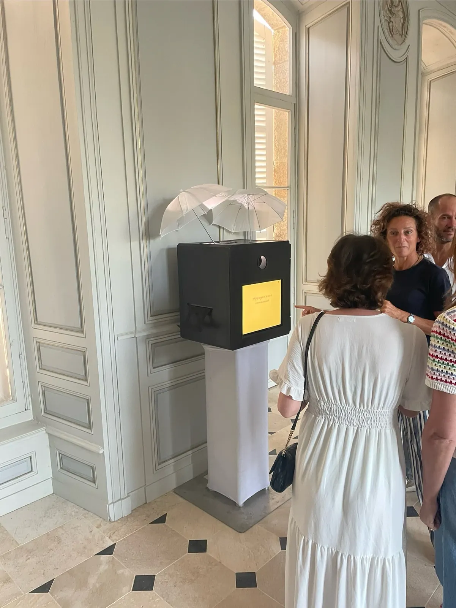
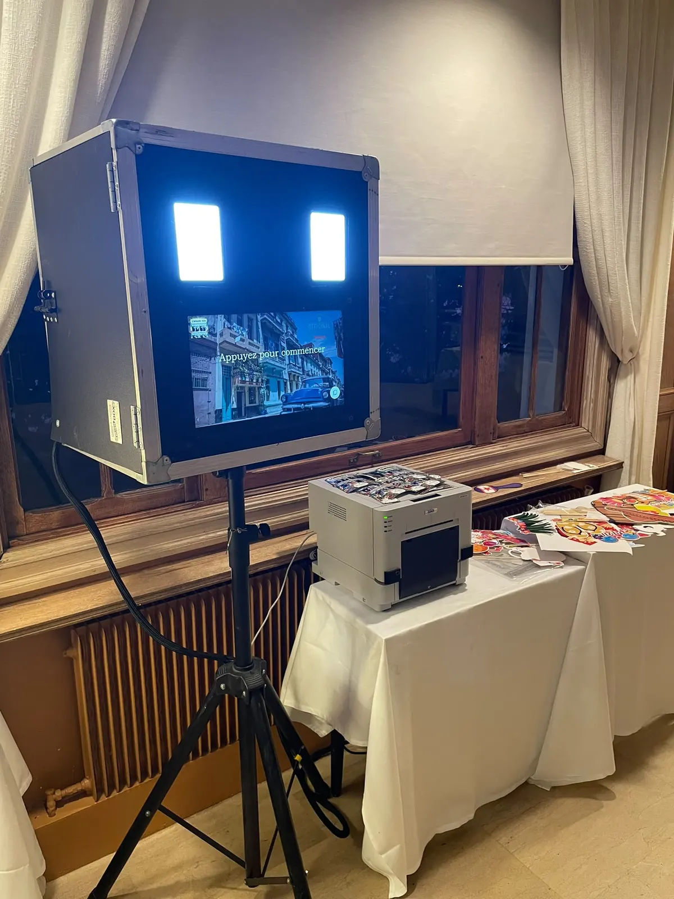

Bar à vinyles, borne photo & effets scéniques.
Comment créer du lien pendant le cocktail puis marquer les temps forts de la soirée sans tomber dans les animations figées : nos trois compléments les plus demandés sur devis.
Trois animations conçues pour fédérer toutes les générations
Chaque animation s'intègre visuellement au décor de votre réception tout en gardant un interlocuteur unique côté technique.
Bar à vinyles (+500 disques)
House, jazz, rock, variété française et internationale : vos invités parcourent les bacs, choisissent une pochette et écoutent leur titre intégré en direct par le DJ.
Sur devis · Cocktail & pisteBorne photo vintage (Photobooth)
Un point de rendez-vous convivial livré et installé avec impressions illimitées sur papier photo, cadre personnalisé et galerie numérique en ligne.
Sur devis · Impressions illimitéesEffets scéniques (étincelles & fumée lourde)
Soulignent une entrée des mariés, une ouverture de bal ou un lancement de produit d'entreprise au moment exact voulu.
Sur devis · Temps forts


Questions fréquentes
Comment fonctionne concrètement le bar à vinyles pendant un événement ?
Nous installons des bacs contenant plus de 500 disques vinyles (house, jazz, rock, variété française et internationale). Vos invités choisissent librement leurs pochettes pendant le cocktail ou le début de soirée, et le DJ intègre les titres en direct dans sa sélection.
Que comprend la borne photo vintage en prestation ?
La borne photo vintage inclut la livraison, l'installation sur place, les impressions illimitées sur papier photo haute qualité, un cadre personnalisé aux noms des mariés ou au logo de votre entreprise, ainsi qu'une galerie numérique en ligne.
Les jets d'étincelles froides sont-ils autorisés en intérieur ?
Les machines à étincelles froides et fumée lourde produisent un effet visuel sans chaleur ni odeur envahissante, idéal pour une ouverture de bal, une entrée en salle ou un lancement de produit, sous réserve de validation technique avec le lieu.
Envie d'ajouter le bar à vinyles ou la borne photo ?
Précisez les options souhaitées dans votre demande : nous les chiffrons séparément sur votre devis sous 24 heures.